Building in stealth mode
Evidence, not just alarms.
AeroKastell is building a new way to protect critical sites from drones: detect it, identify it, locate the pilot, prove it. Quietly, precisely, and by the book.
Want to talk early? contact@aerokastell.com